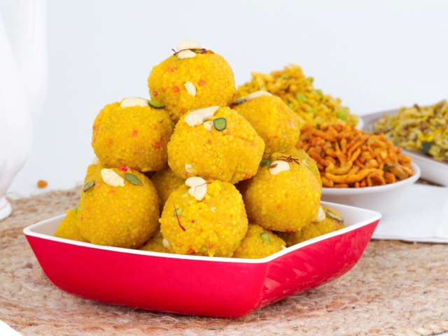

Ingredients
1.Bengal gram flour (Besan) - 1/2 kg
2.Rice flour - 1/4 cup
3.Cooking soda - 1/4 tsp
4.Lemon Yellow/ Orange food color - a pinch
5.Ghee - 1 1/2 tbsp
6.Water 2 1/3 cup
7.Oil for frying the boondis
For the sugar syrup
1.Sugar - 3/4 kg
2.Water - 2 cups
3.Milk – 2-3 tbsp milk
4.Cardamom powder - 1/4 tsp
5.Broken Cashew nuts – ¼ cup
6.Cloves – 6-7
7.Kalkandu, crystalised sugar (khadi sakkar in hindi) you get in small cubes – a handful.
Method
1. Sieve both bengal gram flour and rice flour separately.
2. Fry the cashew nuts and cloves in ghee separately and keep it aside. Make a
powder of cloves.
To make sugar syrup
1.In a saucepan, add the sugar, little water and mix well and bring to boil.
2.Add the milk, the layer of dirt will float on top of the vessel. Remove with
the help of a tea strainer. When the syrup reaches one string consistency,
switch off the gas. Add the cardamom powder, clove powder and mix well. The
purpose of making the clove powder - if you put the whole clove, it will be
thrown out as no one will eat. If it is mixed in the powdered form it goes
into the stomach.
To make Boondis
1.Mix both bengal gram flour, rice flour, add cooking soda and a pinch of yellow
/ orange color.
2. Add water and make a batter. Add the water little by little to get a batter
which is not thin or thick without forming lumps in it.
3.Heat oil and pour a little batter on the boondi ladle. Pearl like droplets of
batter will fall into the hot oil. Do not fry them like you fry the boondis
for mixture. It should be soft at the same time cooked. Keep aside. Adjust
the gas from SIM TO MEDIUM according to the requirement.
To make Boondi Laddu
1.After making the boondi, put them in the sugar syrup and mix well. Keep this aside for 4-5 hours. In between once or twice mix the same well and keep covered. Make the laddus next day. While making laddus, stuck one kaju (cashew) piece so that it is evenly distributed on all laddus. If you mix it in the mixture, some laddus will have kaju and some may not.